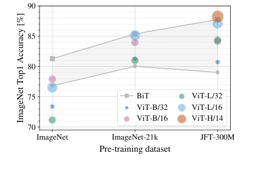
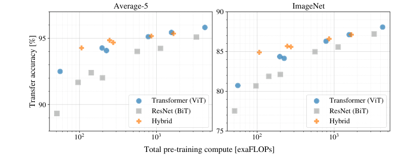

DeiT beat ViT-B/16's JFT-300M accuracy training on ImageNet alone
A modernized convolutional network on a modern recipe ties ViT at matched size, so most of what looked like a data-scale win for the transformer was the training recipe.
An Image is Worth 16x16 Words: Transformers for Image Recognition at Scale
Read the paperWhile the Transformer architecture has become the de-facto standard for natural language processing tasks, its applications to computer vision remain limited. In vision, attention is either applied in conjunction with convolutional networks, or used to replace certain components of convolutional networks while keeping their overall structure in place. We show that this reliance on CNNs is not necessary and a pure transformer applied directly to sequences of image patches can perform very well on image classification tasks. When pre-trained on large amounts of data and transferred to multiple mid-sized or small image recognition benchmarks (ImageNet, CIFAR-100, VTAB, etc.), Vision Transformer (ViT) attains excellent results compared to state-of-the-art convolutional networks while requiring substantially fewer computational resources to train.1
Sixteen-by-sixteen patches, run through a sequence model built for sentences
Dosovitskiy, Beyer, Kolesnikov, and their coauthors at Google Research ask a blunt question. Is convolution's fixed neighborhood structure necessary for an image classifier, or can enough pretraining data replace it?1 Their method matches the bluntness. Cut an image into a grid of fixed-size patches, treat each patch as one token, and run the token sequence through the same encoder block a language model runs on words, with no convolution anywhere in it.1 Trained on ImageNet's 1.3 million images alone, the resulting model reaches 77.91% top-1 accuracy, a few points below a comparable ResNet.1 Pretrained first on JFT-300M, Google's internal 303-million-image dataset, the largest version of the same architecture reaches 88.55%, ahead of every convolutional network the paper compares it against.1 The paper's claim sits in the gap between those two numbers: a convolution's built-in assumptions about neighboring pixels help when data is scarce, and stop helping, or start costing something, once there is enough of it.
A patch becomes a token, and a learned vector tells it where it sat
An image arrives as a grid of pixels: height H, width W, C color channels. The paper's first move is mechanical: reshape that grid into a sequence of flattened P-by-P patches, 16 pixels square in the paper's main configuration. That gives N = HW/P^2 patches, each flattened into one vector of length P^2{\cdot}C.1 Each flattened patch is then multiplied by one shared learned matrix, mapping it to whatever hidden size the model runs at.1 That projected patch is the model's version of a word embedding: one token per patch, drawn from a projection the model learns rather than a vocabulary it looks up.
Two more pieces complete the token sequence before the encoder ever runs. The paper prepends one extra, learnable token to the front of the sequence, attached to no patch of the image, whose only job is to accumulate information from every other token as the encoder runs; its state after the last layer becomes the image's representation.1 And because self-attention has no sense of where a token sat in the original image, the paper adds a learned position embedding to every token, patches and class token alike, before the first encoder layer sees any of it. It is an ordinary, learnable 1D embedding, not one built to know the patch grid was two-dimensional.1 Equation 1 states the whole assembly:
- \mathbf{x}_{\text{class}}The prepended learnable token, attached to no patch; its final-layer state becomes the image's representation.
- \mathbf{x}_p^{i}Patch i, flattened into one length-P^2{\cdot}C vector before projection.
- \mathbf{E}The learned projection matrix, the same matrix at every patch position.
- \mathbf{E}_{pos}The learned position embedding, added once per token: the model's only source of layout information at this step.
\mathbf{E} is learned during training and shared across every patch position. \mathbf{E}_{pos} is learned per position, and is the only place in the model that knows a patch's row and column came from anywhere in particular. The paper is direct about what this costs: strip the two-dimensional layout out at the input, and nothing else in the network puts it back except at this first step. The only other exception is fine-tuning time, when the position embeddings are interpolated for a new image size.1 From there the sequence runs through a standard transformer encoder: L identical blocks, each a multi-head self-attention sub-layer followed by a two-layer MLP with a GELU nonlinearity, a layer norm before each sub-layer and a residual connection after it.1
The class token's state after the final block, layer-normed, \mathbf{y} = \mathrm{LN}(\mathbf{z}_L^0), is what the classification head reads.1 The paper builds three sizes of this block, borrowed from BERT's naming and extended with one size larger than BERT ever used:1
| Model | Layers | Hidden size | Heads | Params |
|---|---|---|---|---|
| ViT-Base | 12 | 768 | 12 | 86M |
| ViT-Large | 24 | 1024 | 16 | 307M |
| ViT-Huge | 32 | 1280 | 16 | 632M |
A smaller patch does not change this table. It lengthens N, the sequence the same encoder reads. That is why the paper notes sequence length is inversely proportional to the square of patch size, and a smaller patch is simply more expensive to run.1
ViT-B/16 gains 6.24 points between 1.3 million and 303 million images
Figure 1 draws the crossover directly: ImageNet top-1 accuracy on the y-axis, the three pretraining datasets on the x-axis, ViT variants as colored points against a shaded band spanning the BiT ResNets of comparable size.1

At the leftmost point, every ViT variant sits at or below the top of the BiT band: convolutional inductive bias is winning.1 Moving right, the paper's own two same-architecture comparisons show what changes. ViT-B/16 reaches 77.91% pretrained on ImageNet's 1.3 million images alone, and 84.15% pretrained on JFT-300M's 303 million, a 6.24-point gain from data alone with architecture and fine-tuning recipe both held fixed.1 ViT-L/16 shows the same direction at a higher baseline: 85.30% pretrained on ImageNet-21k's 14 million images, 87.76% on JFT-300M's 303 million, a 2.46-point gain.1 The paper's own reading of the shape: large scale training "trumps inductive bias."1
The record thins at the top end. ViT-H/14, the paper's largest model, reaches 88.55% pretrained on JFT-300M, the highest number in the paper's headline comparison and the number its abstract's claim rests on most heavily1. But no version of ViT-H/14 pretrained on ImageNet-1k or ImageNet-21k appears anywhere in the paper, so there is no same-model, lower-data comparison point for it the way there is for B/16 and L/16. The 88.55% figure is real and, as later sections check, unchallenged by anything in the after-record. What is missing is a control: nobody, including the paper itself, has shown what ViT-H/14 scores without the 303 million images.
ViT-L/16 matches BiT-L's accuracy at about a fourteenth of its compute
The paper's comparison table puts a compute column beside every accuracy number, measured in TPUv3-core-days: the number of TPU v3 cores used, two per chip, multiplied by training days.1
| Model | Architecture | ImageNet | TPUv3-core-days |
|---|---|---|---|
| ViT-H/14 | pure transformer | 88.55% | 2.5k |
| ViT-L/16 | pure transformer | 87.76% | 0.68k |
| BiT-L | ResNet152x4 | 87.54% | 9.9k |
| Noisy Student | EfficientNet-L2 | 88.4–88.5% | 12.3k |
ViT-L/16 reaches essentially BiT-L's accuracy, 87.76% against 87.54%, at roughly one-fourteenth the compute. ViT-H/14 reaches Noisy Student's accuracy at roughly one-fifth the compute. The paper states the general version of this pattern across a controlled scaling study, every model pretrained on the same JFT-300M dataset so only architecture and size vary: ViT uses "approximately 2-4x less compute to attain the same performance," averaged over five datasets.1

Two things sit in that figure beyond the headline ratio. Hybrid models feed a ResNet's early feature maps into the same patch-and-encoder pipeline, closing part of the gap between ViT and ResNet at small compute budgets. But the hybrid's edge over a pure ViT narrows and disappears as compute grows: the convolutional stem stops paying for itself once the model and pretraining set are both large enough.1 Every point in the figure, ViT, ResNet, and hybrid alike, was pretrained on JFT-300M. That holds data scale fixed and varies only compute and architecture, a narrower comparison than Figure 1's data-scale crossover, even though both draw on the same three families of model.1
DeiT reran ViT-B/16's worst number with a different recipe
That is the paper's own report. The after-record is three later papers, each holding two of Dosovitskiy et al.'s three variables (architecture, training recipe, and pretraining scale) fixed and changing the third, to see which one the accuracy actually depended on.
Touvron, Cord, Douze, Massa, Sablayrolles, and Jégou, publishing as DeiT in December 2020, start from ViT-B/16's worst-looking number: 77.91% pretrained on ImageNet-1k alone.2 DeiT's architecture is ViT-B itself: the paper states it is "identical to the one proposed by Dosovitskiy et al. […] with no convolutions."2 Everything that changes sits around the architecture. The recipe adds heavier data augmentation: RandAugment, Mixup, CutMix, random erasing, stochastic depth, repeated augmentation.2 Its strongest configuration adds hard-label distillation, where the model trains partly to match the class a convolutional teacher network would have predicted, rather than only the ground-truth label.2
Trained on ImageNet-1k alone, no distillation, that recipe reaches 81.8% at 224px and 83.1% after a 384px fine-tune: 3.9 and 5.2 points above ViT's own ImageNet-only number, with identical architecture and identical training data.2 Adding hard-label distillation from a RegNetY-16GF teacher reaches 83.4% and 84.5%; a longer, 1000-epoch distillation schedule reaches 85.2%, the best number DeiT reports.2 That 85.2% is higher than ViT-B/16's own number pretrained on the full 303-million-image JFT-300M dataset and fine-tuned at 384px, 84.15%.2 A standard, 300-epoch DeiT-B run takes 37 hours on two 8-GPU V100 nodes, or 53 on one.2
The comparison holds architecture and evaluation data fixed and changes only the recipe, so it answers a narrower question than the paper's own crossover. It asks not whether convolutional inductive bias ever helps, but whether ImageNet-1k's 1.3 million images were really too little data to train a competitive ViT-B, or whether the 2020 recipe simply did not extract what was there. DeiT's own framing states the second reading directly: "we achieve a strong performance without requiring a large training dataset, i.e., with Imagenet1k only."2 What DeiT does not test is whether the same recipe substitution would close the gap at ViT-H/14's scale. The paper never trains anything past its own Base-sized, 86-million-parameter DeiT, so the number that still has no lower-data comparison, ViT-H/14's 88.55%, is untouched by this result too.
A recipe swap alone moves ResNet-50 by 2.7 points; self-attention adds about zero more
Liu, Mao, Wu, Feichtenhofer, Darrell, and Xie ask a different question of the same gap: how much of it is architecture at all? Their starting point is an unmodified ResNet-50, 76.1% top-1 on ImageNet-1k with its original training recipe.3 Retraining the identical architecture, no layer changed, with the transformer-era recipe DeiT introduced (AdamW, 300 epochs, Mixup, CutMix, RandAugment, stochastic depth, label smoothing) reaches 78.8%, a 2.7-point gain from recipe alone, with zero architectural change.3 From that recipe-updated ResNet-50, the paper then modernizes the architecture step by step: a patchify stem, depthwise convolution, an inverted bottleneck, larger 7×7 kernels, GELU, fewer normalization layers.3 No self-attention is introduced at any step. The result, ConvNeXt-T, reaches 81.97% top-1 at matched compute (about 4.5 GFLOPs), ahead of Swin-T's published 81.30%, the closest windowed-attention transformer at that budget.3 The pattern holds at larger scale too: ConvNeXt-B at 384px reaches 85.1% against Swin-B's 84.5%.3
The paper's cleanest single result removes even the hierarchical, windowed structure that separates Swin from ViT. An isotropic ConvNeXt (no downsampling stages, matched to ViT's own flat, non-hierarchical shape) is compared against ViT at matched parameter count and FLOPs, recipe held equal across both. The result: 79.7% against 79.8% at the Small size, 82.0% against 81.8% at Base, 82.6% against 82.6% at Large.3 Depthwise convolution and self-attention, at matched design and matched recipe, land within two-tenths of a point of each other at every size tested.
The DeiT and ConvNeXt experiments separate two variables the ViT paper's single crossover leaves entangled:
| Variable changed | Held fixed | Accuracy | Gain |
|---|---|---|---|
| Recipe | ResNet-50 architecture, ImageNet-1k data | 76.1% → 78.8% | +2.7 |
| Recipe | ViT-B/16 architecture, ImageNet-1k data, no distillation | 77.91% → 81.8% | +3.9 |
| Recipe + distillation | ViT-B/16 architecture, ImageNet-1k data | 77.91% → 85.2% | +7.3 |
| Pretraining data | ViT-B/16 architecture and recipe | 77.91% → 84.15% | +6.24 |
| Architecture | isotropic shape, recipe, ImageNet-1k data, matched params/FLOPs | within 0.2 at S/B/L | ≈0 |
A recipe change alone, architecture and data both held fixed, is worth 2.7 to 3.9 points. Adding distillation on top takes the ViT-B case to 7.3. Architecture alone, once recipe and data are both held fixed, is worth about zero. Set beside those figures, the ViT paper's own 6.24-point, data-only gain for B/16 is the same order of magnitude as what a recipe change buys a ResNet. That does not make the paper's crossover wrong: JFT-300M did produce the accuracy the paper reports. But it does mean the crossover alone cannot say that a transformer, rather than a training procedure, is what needed the data.
One scale comparison remains, and it is not a controlled one. ConvNeXt-XL, pretrained on ImageNet-22K's 14 million images and fine-tuned at 384px, reaches 87.8%: close to ViT-H/14's 88.55% on JFT-300M's 303 million, at roughly one-twentieth the pretraining images.3 The two numbers are not a same-dataset ablation; ImageNet-22K and JFT-300M differ in more than size. What it does show is that a large-but-not-web-scale image set, paired with a modern CNN and a modern recipe, gets within a point of the crossover's headline number without a transformer anywhere in the model.
What the extra data actually taught the lower layers
One paper in the after-record asks a different kind of question: not whether the crossover is real, but what it is made of inside the model. Raghu, Unterthiner, Kornblith, Zhang, and Dosovitskiy compare what ViT and ResNet layers represent, using a similarity measure called CKA, and how that changes with pretraining scale. Dosovitskiy himself is among the authors, so this is the original team checking its own result from the inside.4
Their clearest finding is about attention itself. Self-attention has no built-in notion of a local neighborhood the way a convolution does; a head is free to attend anywhere in the image from layer one. Measuring the average pixel distance each attention head attends to, at the lowest layers, ViT-L/16 and ViT-H/14 pretrained on JFT-300M learn a mix of local and global heads, some attending to nearby patches only, despite nothing in the architecture requiring it.4 The same models pretrained on ImageNet alone do not: "with not enough data, ViT does not learn to attend locally in earlier layers."4 Scale is not only improving the final accuracy number here; it is teaching the lowest layers to do, from data alone, roughly what a convolution's architecture does for free.
That representational difference shows up further downstream too. Ten-shot linear probes (freezing the network and testing how well its intermediate-layer features alone predict labels) show JFT-300M-pretrained ViT-L/16 and ViT-H/14 beating their ImageNet-only-pretrained counterparts by roughly 30 points of absolute accuracy at middle layers.4 The crossover is not only a fine-tuning-time effect: the representations themselves are worse without the extra data.
One qualification limits how far this generalizes. The local-attention finding holds for ViT-L/16 and ViT-H/14, the two largest models the paper tests it on; the smallest model tested, ViT-B/32, learns to attend locally even when trained on ImageNet alone.4 Whatever data scale is substituting for at the largest sizes, the paper's own appendix shows it is not a universal property of the architecture at every size. It is something the largest models specifically fail to learn without enough data, and the paper does not test whether ViT-B/16 or ViT-L/32 fall on one side of that line or the other.
Nothing in the after-record retrains ViT-H/14 without the extra data
Every number the paper reports holds up. Nothing in the after-record retrains any ViT size on a dataset the paper did not already test, and nothing contradicts Table 2, Figure 1, or Figure 2 here as measurements.1 ViT-H/14's 88.55% JFT-300M number in particular is untouched: no source checked here retrains ViT-H/14, or anything close to its 632-million-parameter size, on ImageNet-1k alone.1 If the crossover's largest-model half depends on something a smaller-model recipe fix can undo, that test has not been run.
What the after-record earns is narrower and still real: DeiT and ConvNeXt both show that at ViT-B's parameter count, most of what looked like a data-scale requirement was a training-recipe requirement, recoverable without the extra 300 million images.23 ConvNeXt goes further and shows the residual, once recipe is fixed too, is not architectural: depthwise convolution ties self-attention at matched everything.3 Raghu et al.'s representational analysis is the piece that keeps the paper's own reading alive rather than replacing it: scale is doing something specific and measurable to the lowest layers, teaching them to attend locally the way a convolution's architecture does automatically, at least at the two largest sizes tested.4 Put together, the paper's claim survives with a condition attached: pure self-attention needed either enormous pretraining data or a substitute for what that data was teaching it. By 2022 the field had found a training recipe that supplies part of that substitute far more cheaply than JFT-300M does, for the Base-sized model tested. Whether the substitute scales as well as the data does, at ViT-H/14's size, is the question this record leaves open.
Sources
- Dosovitskiy, Beyer, Kolesnikov, Weissenborn, Zhai, Unterthiner, Dehghani, Minderer, Heigold, Gelly, Uszkoreit & Houlsby · An Image is Worth 16x16 Words: Transformers for Image Recognition at Scale
- Touvron, Cord, Douze, Massa, Sablayrolles & Jégou · Training Data-Efficient Image Transformers & Distillation Through Attention
- Liu, Mao, Wu, Feichtenhofer, Darrell & Xie · A ConvNet for the 2020s
- Raghu, Unterthiner, Kornblith, Zhang & Dosovitskiy · Do Vision Transformers See Like Convolutional Neural Networks?